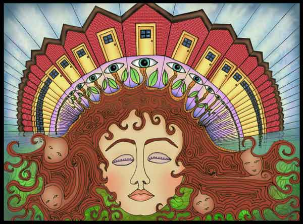

|
Door to Salviaspace
by Kundasally
This work is protected by copyright.
It is reproduced here with the author's permission.
| "During this journey, I found myself standing in front of my childhood home. As far as I could see in either direction there were multiple versions of this house stretched out to infinity. 'I' was standing in front of them all simultaneously. I could sense child-like beings urging me to 'come on' and 'go' with them. The beings were not leading me through a door, but rather somewhere along the continuum of doors. I felt that it was up to me to choose which one to enter. There was, at once, a sense of sameness and separateness to these 'beings.' They may have been other versions of myself." |

|